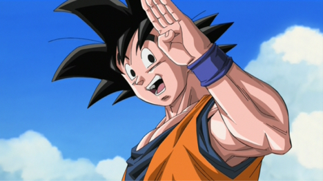

 A nevem Szász Balázs és a Neumann János Szakgimnáziumba járok. 9-es vagyok és informatikával foglalkozom. Az álmom az, hogy el tudjak helyezkedni a nagyvilágban informatikával kapcsolatos állással valamint, hogy meg is tudjak ebből élni.
Nagyon sok mindent szeretek csinálni, de inkább felsorolom ezeket:
Nagyon szeretek még ezek mellett sorozatokat nézni. Itt is van egy-kettő a kedvenceim közül: